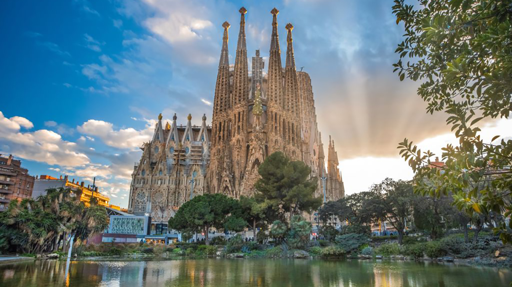

Іспанія
Іспа́нія, офіційно Королі́вство Іспа́нія — держава на південному заході Європи. Займає більшу частину Піренейського півострова, Балеарські та Пітіузькі острови в Середземному морі, Канарські острови в Атлантичному океані. Іспанія омивається Середземним морем й Атлантичним океаном. По суходолу Іспанія межує з Португалією на заході (спільний кордон — 1214 км), з Францією — по гребенях Піренейських гір (623 км), з Андоррою (63,7 км), з Гібралтаром та з Марокко.
Саграда Фамілія

Храм Святого Сімейства — візитна картка Каталонії. Ви напевно бачили цей
архітектурний комплекс на фотографіях з видами Барселони. Собор — одне з найбільш цікавих
місць Іспанії, що дивує не тільки фантастичною архітектурою, а й історією свого
створення. Справа в тому, що будівництво Храму Святого Сімейства почалося ще в 1882
році, але триває до сьогодні.
Проект собору створив славетний іспанський архітектор Антоніо Гауді. За його задумом
будівля повинна стати справжньою одою природі, а тому абсолютно неприпустимо
використовувати прямі лінії.
Сучасники архітектора були впевнені, що химерні за своєю формою конструкції не
витримають випробування часом і обов’язково впадуть. Але через півстоліття після смерті
Гауді, завдяки комп’ютерним технологіям, інженери довели: рішення іспанського архітектора
геніальні. Вони не тільки відповідають всім законам фізики, але й на багато століть
випередили свій час.
Саграда Фамілія — одна з найбільших релігійних споруд в світі. Відвідати її варто і
віруючим, і всім тим, хто цінує рукотворну красу і хоче своїми очима побачити незвичне
внутрішнє оздоблення собору.
Мис Маррокі
Крайня південна точка Європейського континенту, відстань від якої до Африки становить всього 14 кілометрів. Звідси добре видно марокканський берег. А добиратися на мис найкраще з Севільї, Малаги або будь-якого іншого міста Андалусії. Якщо їхати по автомобільній трасі, орієнтир — селище Тарифу. Це популярне місце для серфінгу. Щороку тут збираються, щоб продемонструвати свої вміння, кайт- і віндсерфери з усього світу. Ну а якщо ви не захоплюєтеся спортом, вам буде просто цікаво побачити точку, в якій зустрічаються Атлантичний океан і Середземне море. Та й сам Тарифу — цікавий населений пункт, в якому гарно збереглися історичні пам’ятки і древні будівлі.
Арена Лас-Вентас, Мадрид
Якщо вас не бентежить досить жорстока традиція Іспанії, ласкаво просимо на найбільшу в країні арену для бою биків. Вона вміщує 20 тисяч глядачів, які з’їжджаються сюди з усього світу, щоб подивитися справжню кориду. Виступ на Лас-Вентас — пік слави і для тореро, і для ферми з вирощування биків. Сюди допускаються тільки спортсмени з величезним досвідом. А ферми борються за честь взяти участь в змаганні роками. Тому видовищності тутешнім виступам не позичати.
Кафедральний собор, Севілья

Один з найбільших європейських соборів, побудованих в готичному стилі. Тут зберігаються унікальні реліквії і твори мистецтва. За легендою головний хрест храму відлитий із золота, яке Христофор Колумб привіз з самої Америки. Севільський собор — без сумніву те, що варто подивитися в Іспанії, якщо ви подорожуєте по Андалусії. Крім химерної архітектурної форми і багатої історії, цей храм вражає уяву внутрішнім оздобленням. Він побудований на місці зруйнованої мусульманської мечеті, його дзвіниця перероблена з мінарету, а вівтар вважається одним з найкрасивіших у світі. Кожна сторона собору неповторна — фасад і інтер’єр створювалися різними архітекторами в період з XV по XIX століття.
Фонтани Монтжуїк, Барселона
Магічний,, співаючий, чарівний — такими епітетами нагороджують комплекс, розташований на пагорбі Монтжуїк. Величезний фонтан, що складається з безлічі фонтанчиків поменше, переливається всіма кольорами веселки і робить це в такт класичній музиці. Здається, що він «танцює», при цьому його рухи не повторюються. І спостерігати за цим дивовижним спектаклем можна нескінченно. На жаль, це місце дуже багатолюдно: фонтани Монтжуїк давно стали візитівкою Барселони і притягують до себе натовпи туристів, які тут буквально всюди.
Корисні посилання
- Іспанія
- Франція
- Канада
- Австралія
- Бразилія
- Аргентина
- Італія
- Індія
- ПАР
- Індонезія